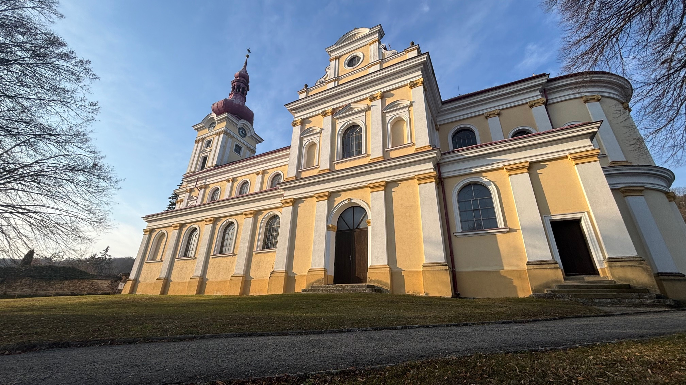
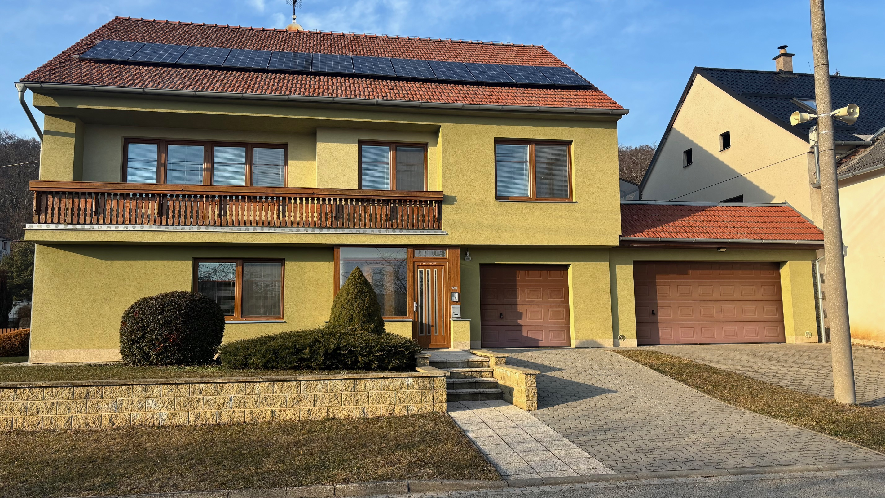
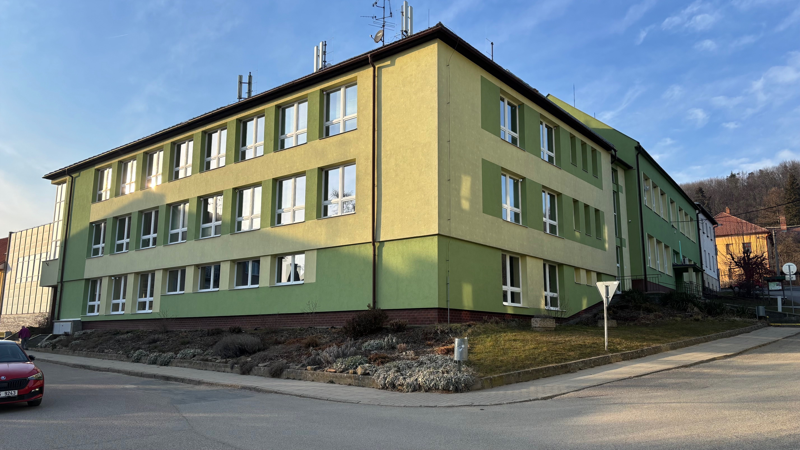

Pustiměř je má rodná vesnice, žiju zde od narození a mám odtud hodně zážitků. Chodil jsem zde na základní školu. Mám tu své nejlepší kamarády a rodinu. Jsou tu všechny věci, které potřebuji, jako třeba tři obchody, místa, kde se mohu setkávat s přáteli. Je zde hodně možností, co dělat, například můžete jít lézt na lezeckou stěnu, jed se projet do okolního města po nové cyklostezce, nebo si jít zakopat na fotbalové hřiště.
|  |  |  |